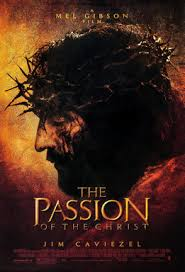
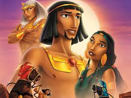
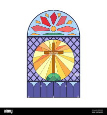

Christian films explore themes of sacrifice, redemption, covenant relationships, and the dignity of the individual. These stories emphasize moral transformation and the tension between divine grace and human weakness.

This film retells the Exodus story with reverence and dramatic power. It illustrates themes of deliverance, liberation, divine calling, and faith in God’s promises.

This image highlights the rich symbolism of Christianity, emphasizing themes of faith, redemption, and divine guidance through visual storytelling.